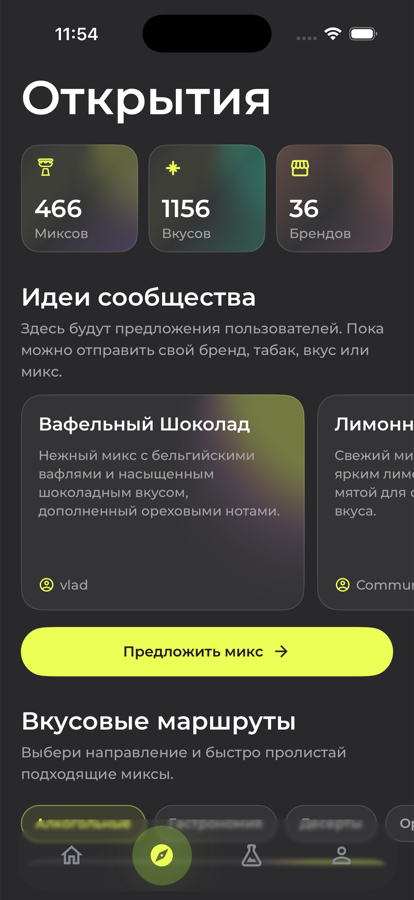
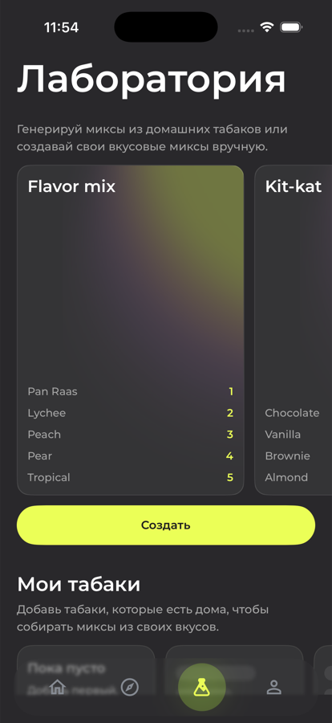

01
Находи миксы под себя
Выбери любимые бренды, категории, вкусы и крепость. Mixly сделает подборку релевантнее.
Твой проводник в мире миксов
Mixly подбирает миксы по любимым брендам, вкусам и комфортной крепости. Сохраняй находки и находи следующее сочетание.
Не просто каталог
Mixly складывает твои предпочтения в понятный маршрут, чтобы новая идея всегда была в тему.
01
Выбери любимые бренды, категории, вкусы и крепость. Mixly сделает подборку релевантнее.
02
Добавляй табаки, которые есть дома, и создавай собственные рецепты в Лаборатории.
03
Сохраняй понравившиеся идеи в избранное и возвращайся к ним перед следующей чашей.
Твой ритуал проще
Выбери бренды, вкусы и крепость, которые тебе подходят.
Открывай новые сочетания без случайных советов и лишнего поиска.
Собирай личную коллекцию находок и рецептов в Лаборатории.
Открытия
В «Открытиях» появляются новые направления, идеи от сообщества и разговоры, которые помогают найти своё следующее сочетание.
Исследуй сочетания через настроение, вкус и новое направление.
Смотри предложения других пользователей и находи вдохновение.
Делись впечатлениями и уточняй то, что хочется повторить.

Лаборатория
Добавляй табаки, держи под рукой то, что есть дома, и сохраняй собственные рецепты в одном месте.
Собирай сочетания из знакомых вкусов и сохраняй пропорции.
Отмечай то, что уже есть на полке, чтобы выбирать быстрее.
Возвращайся к идеям, меняй детали и пробуй снова.

Что нового
Собрали изменения, которые делают поиск, сохранение и обмен миксами удобнее.
Блог Mixly
Три последних материала о вкусах, сочетаниях и привычках, которые помогают находить своё
Все статьиОтзывы
Лента впечатлений от тех, кто уже добавил Mixly в свой привычный ритуал.
«Раньше держала удачные сочетания в заметках. Теперь всё, что хочется повторить, собрано в одном месте»
«Удобно, что можно начать от вкуса, который хочется сейчас, а не искать микс по всему интернету»
«Фильтры и Лаборатория особенно выручают, когда хочется собрать что-то новое из того, что уже есть дома»
«Не приходится вспоминать, что было в прошлый раз. Удачные идеи всегда под рукой»